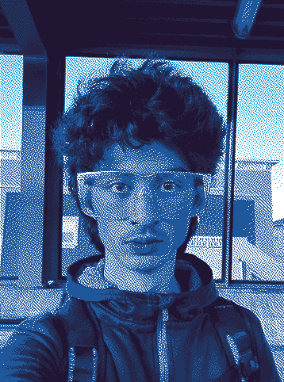

Hello, I'm Lennier.
I'm currently a student at Lowell HS in San Francisco, where I've been taking the advanced math track, as well as courses in Physics and Computer Science. I'm co-lead of Operations at Flight Club Aerospace, a student-run nonprofit building an FAA Part-103 compliant ultralight aircraft from scratch.
I enjoy playing the guitar, reading Hard SF/Hard Fantasy novels, mountain biking, running, rock climbing, and programming.
I'm a member of Hack Club, a nonprofit organization helping teens fall in love with computers and electronics. They've helped me build some pretty cool things, like a 3d map viewer for the terminal and a cheap dual-arm SCARA plotter.
I was a member of #1 Sea Bass (FIRST Robotics Competition team #10221) for the 2026 REBUILT season. As we were a seven-person team, so we all wore a lot of hats: I was their business lead and human player, and I also did subsystems programming, autonomous period programming and pathing, mechanics work, and even some shopkeeping.
If you'd like to contact me, you can reach me here: lenniermulder[AT]icloud[DOT]com